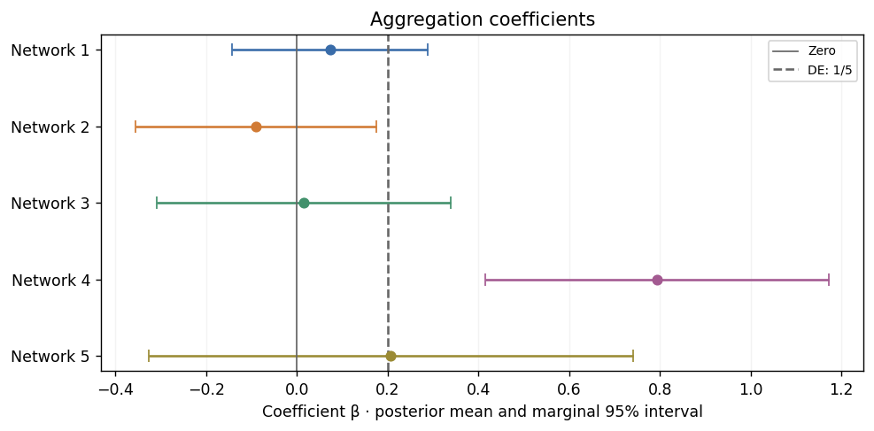
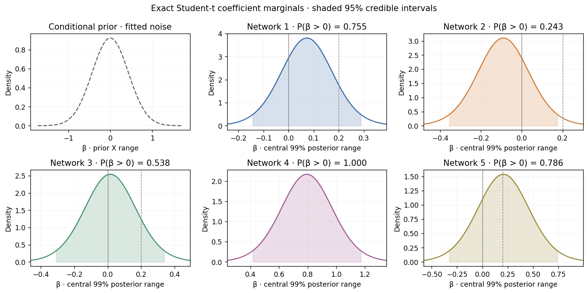
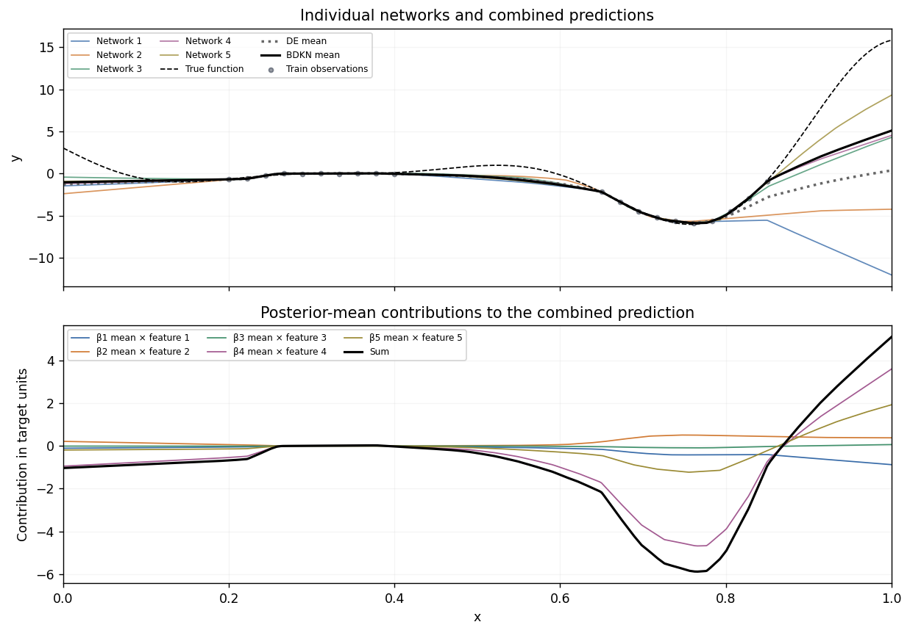
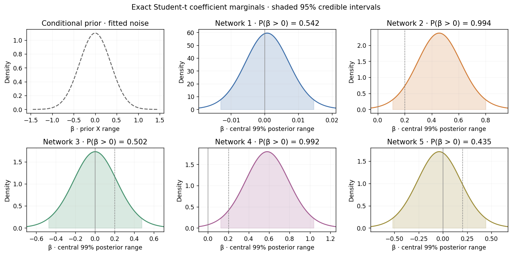
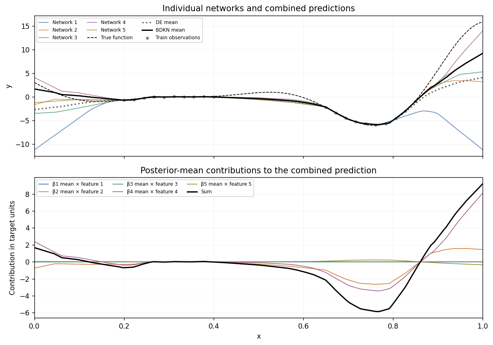
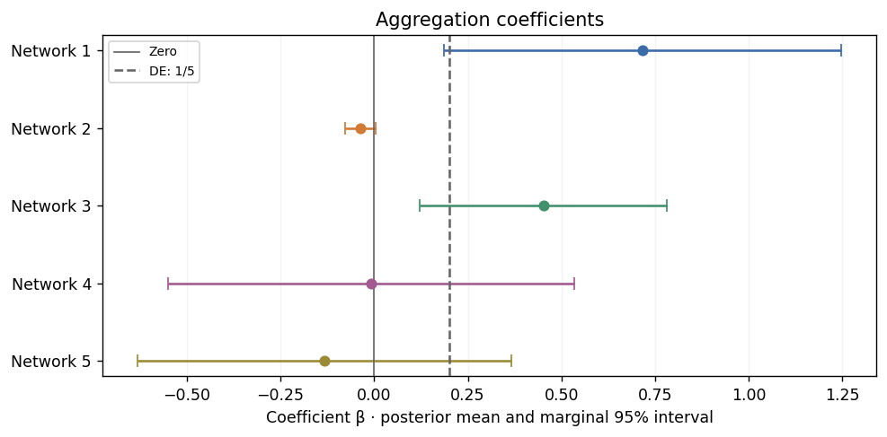
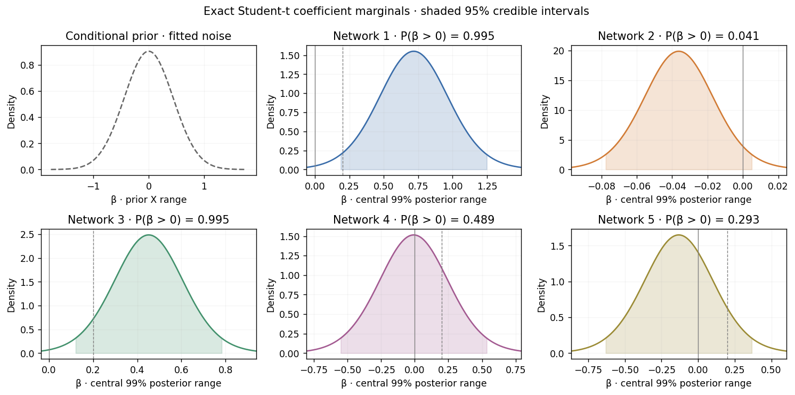
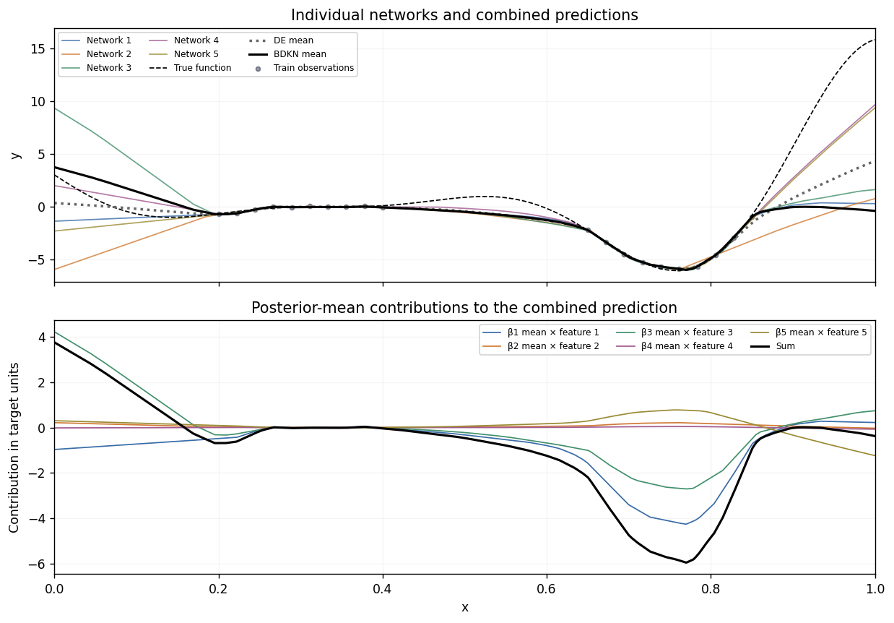

Regression comparison
Download resultsAggregation weights
Coefficients can be negative and need not sum to one. Intervals describe coefficient uncertainty; the dashed reference is DE’s fixed 1/H weight.
BDKN


Each density panel uses its own X range for readability; coefficient intervals above share a common axis. Prior reference conditions on fitted noise. Contribution shares use held-out inputs; test targets are used only for scoring.
| Network | β mean | 95% low | 95% high | P(β > 0) | Contribution share | Test RMSE | Test NLL |
|---|---|---|---|---|---|---|---|
| 1 | 0.04436 | -0.25239 | 0.34112 | 0.62081 | 0.02077 | 2.77758 | 1690.98373 |
| 2 | -0.44101 | -0.90097 | 0.01895 | 0.02963 | 0.20503 | 4.14137 | 2585.39364 |
| 3 | -0.04979 | -0.52027 | 0.42070 | 0.41376 | 0.02849 | 2.11616 | 3948.29119 |
| 4 | 0.96865 | 0.63295 | 1.30434 | 1.00000 | 0.53969 | 1.93914 | 2182.53233 |
| 5 | 0.47701 | -0.05980 | 1.01383 | 0.96070 | 0.20602 | 3.77514 | 19156.44097 |
Functional repulsion · BDKN



Each density panel uses its own X range for readability; coefficient intervals above share a common axis. Prior reference conditions on fitted noise. Contribution shares use held-out inputs; test targets are used only for scoring.
| Network | β mean | 95% low | 95% high | P(β > 0) | Contribution share | Test RMSE | Test NLL |
|---|---|---|---|---|---|---|---|
| 1 | 0.07269 | -0.14299 | 0.28837 | 0.75493 | 0.09993 | 7.41056 | 8574.42526 |
| 2 | -0.09022 | -0.35509 | 0.17466 | 0.24280 | 0.09323 | 5.59360 | 1846.23610 |
| 3 | 0.01506 | -0.30824 | 0.33836 | 0.53822 | 0.01060 | 3.18970 | 60880.21136 |
| 4 | 0.79405 | 0.41551 | 1.17259 | 0.99985 | 0.60149 | 3.06559 | 89955.71672 |
| 5 | 0.20703 | -0.32659 | 0.74065 | 0.78606 | 0.19475 | 1.99074 | 65632.29800 |
Weight repulsion · BDKN



Each density panel uses its own X range for readability; coefficient intervals above share a common axis. Prior reference conditions on fitted noise. Contribution shares use held-out inputs; test targets are used only for scoring.
| Network | β mean | 95% low | 95% high | P(β > 0) | Contribution share | Test RMSE | Test NLL |
|---|---|---|---|---|---|---|---|
| 1 | 0.00072 | -0.01310 | 0.01453 | 0.54246 | 0.00099 | 7.01178 | 4554.04381 |
| 2 | 0.45533 | 0.10999 | 0.80068 | 0.99383 | 0.36427 | 2.99430 | 2958.70367 |
| 3 | 0.00106 | -0.47362 | 0.47573 | 0.50183 | 0.00102 | 2.85221 | 311373.54362 |
| 4 | 0.58074 | 0.12415 | 1.03733 | 0.99237 | 0.59912 | 1.26572 | 257.82332 |
| 5 | -0.03835 | -0.51777 | 0.44107 | 0.43458 | 0.03460 | 1.99685 | 83153.27621 |
First-order repulsion · BDKN



Each density panel uses its own X range for readability; coefficient intervals above share a common axis. Prior reference conditions on fitted noise. Contribution shares use held-out inputs; test targets are used only for scoring.
| Network | β mean | 95% low | 95% high | P(β > 0) | Contribution share | Test RMSE | Test NLL |
|---|---|---|---|---|---|---|---|
| 1 | 0.71753 | 0.18762 | 1.24745 | 0.99476 | 0.42962 | 3.90866 | 19754.44760 |
| 2 | -0.03628 | -0.07756 | 0.00501 | 0.04087 | 0.03201 | 4.51670 | 3809.90314 |
| 3 | 0.45185 | 0.12136 | 0.78233 | 0.99507 | 0.41209 | 4.12171 | 317290.26049 |
| 4 | -0.00755 | -0.54980 | 0.53470 | 0.48855 | 0.00635 | 1.92173 | 16985.16810 |
| 5 | -0.13217 | -0.63066 | 0.36632 | 0.29317 | 0.11993 | 2.19676 | 1713.74697 |